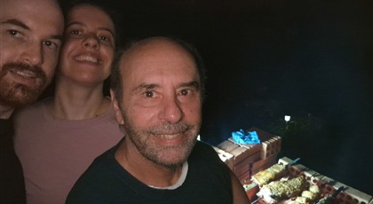

International Events (Upcoming)
-
Festival Brasil & Latino

Festival Brasil & Latino celebrates Brazilian and Latin culture in Tokyo with music, dance, food booths, drinks, and a lively outdoor festival atmosphere. It is a good event for visitors who want international culture, stage performances, and casual festival food in one place.
Event Details:
Date: July 18-19, 2026.
Location: Yoyogi Park Event Square, Tokyo.
Highlight: Samba, parade-style performances, Brazilian food, Latin music, and cultural booths.
-
Oktoberfest 2026 in Shiba Park

Oktoberfest in Shiba Park brings German festival culture to Tokyo through food, drinks, music, and a relaxed outdoor gathering space. Visitors can enjoy German-style dishes, beer, and a cheerful festival mood near one of Tokyo's central park areas.
Event Details:
Date: September 11-23, 2026.
Location: Tokyo Metropolitan Shiba Park Area 4, Tokyo.
Highlight: German beer, festival food, live music, and outdoor seating.